항모 및 기타 밀리터리 잡담
게시: 2021-02-25T06:30:16+09:00
<거포를 장착한 항모> 미국의 2번째 항모 USS Lexington (CV-2)은 원래 1916년에 전투순양함으로 건조되기 시작한 것인데 1922년에 항모로 개조. 단, 그때까지만 해도 "야간 혹은 폭풍우처럼 함재기 못 띄우는 상황에서 적함과 마주치면 어쩌지?" 라는 생각에 항모도 적함과 포격전을 벌일 수 있도록 8인치 2연장 포탑 4기를 유지. 이 포탑들은 1942년 초에 "아무리 봐도 힙하지 않아"라며 떼냄.
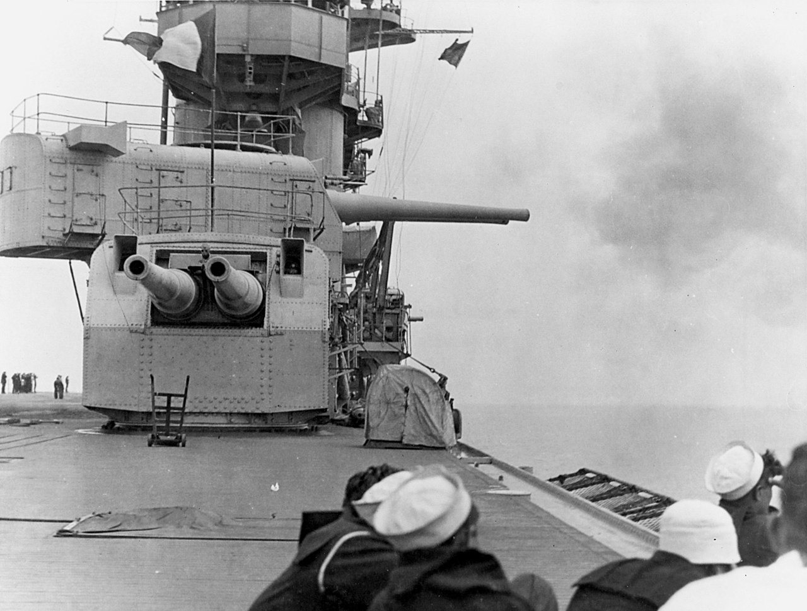
<엉뚱한 피해자> 1986년, 리비아 카다피의 폭탄 테러에 대한 보복으로 미국은 리비아를 폭격. 이른바 엘도라도 작전. 이를 위해 영국에 주둔한 F-111 폭격기를 이용했는데 프랑스와 스페인이 이 폭격에 대한 영공 개방을 거부하는 바람에 수천 마일을 우회함. 공중 급유 받으면 연료야 괜찮겠지만 조종사들 화장실은... (여기서 다시 한번 아늑한 화장실을 갖춘 경항모의 필요성 강조) 근데 시실리 섬 남부 해상에서 F-111 편대는 뜻밖에도 바닷물 속에 시커멓고 둥근 괴물체를 목격. 게다가 거기서 연기가 약간 피어오름. "리비아 해군에 잠수함이 있나보다!"라고 판단한 F-111 편대 중 일부가 거기에 폭탄을 투하한 뒤 리비아 영공에 진입하여 임무 수행. 나중에 알았지만 리비아엔 잠수함이 없었고 그 괴물체는 영국이 Graham 섬이라고 부르고 이탈리아는 Ferdinandea 섬이라고 부르는 해저 화산섬. 2백년 마다 1번씩 물 위로 솟았다가 가라앉는다고. 이 F-111 편대로부터 폭격을 당한 것은 리비아 군 시설과 카다피 궁전, 저 화산섬과 함께 주리비아 프랑스 대사관도 있었음. 프랑스에서는 고의가 아니냐고 매우 강하게 의심했으나 미공군은 사고라고 설명.
"아 실수라니까, 고의라는 증거 있어?"
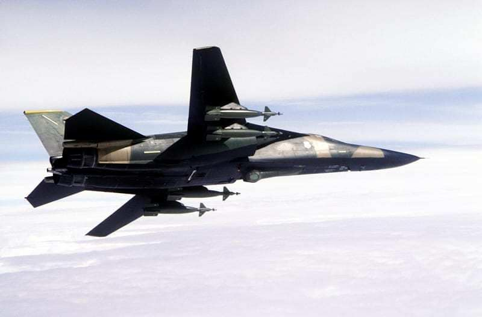 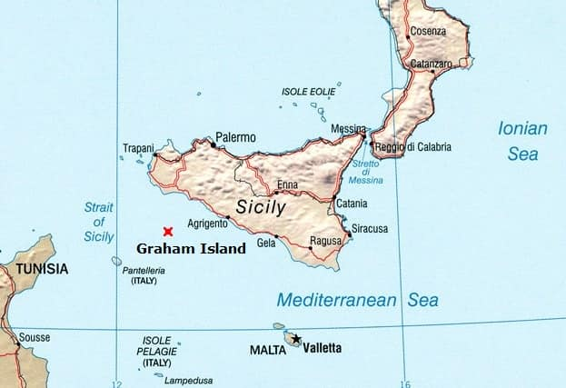 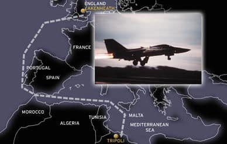
<경항모의 눈> 흔히 정규항모에 비해 경항모는 생존성이 떨어진다고 하는데 그건 사실. 몇가지 이유가 있지만 가장 큰 이유는 AEW(Airbourne Early Warning, 공종조기경보) 항공기를 띄울 수가 없다는 것. 대개 AEW는 쌍발고정익이므로 catapult와 arresting gear로 이착함을 해야 하는데 경항모에서는 그게 무리. 조기경보기가 없다면 수평선 너머에서 대함 미쓸을 쏘는 적 항공기나 적함의 공격에 취약할 수 밖에. 포클랜드 전쟁 때도 경항모와 수직이착륙기 밖에 없던 영국함대는 AEW가 없어서 큰 손실을 봄. 그때의 교훈으로 만든 것이 Searchwater LAST (Low Altitude Surveillance Task) 레이더를 장착한 Sea King 헬리콥터. 근데 이때 만든 LAST Sea King은 2018년에 다 퇴역. 그 뒤를 이을 Crowsnest 레이더를 장착한 Merlin 헬리콥터는 아직 나오지 않았음. 한국해군 경항모가 취역할 때까지는 뭔가 나오기를.
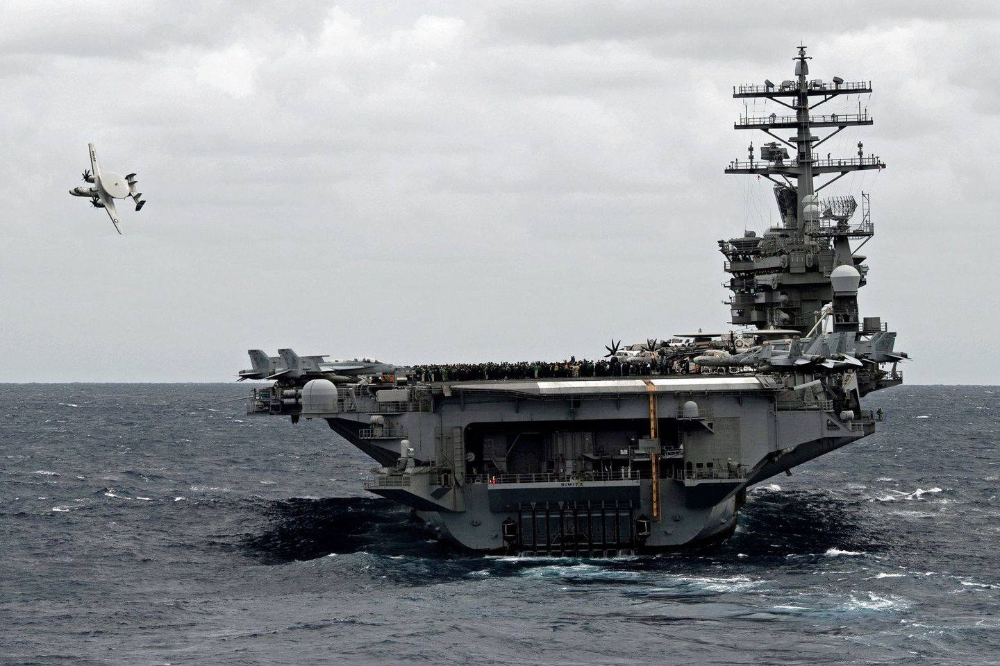 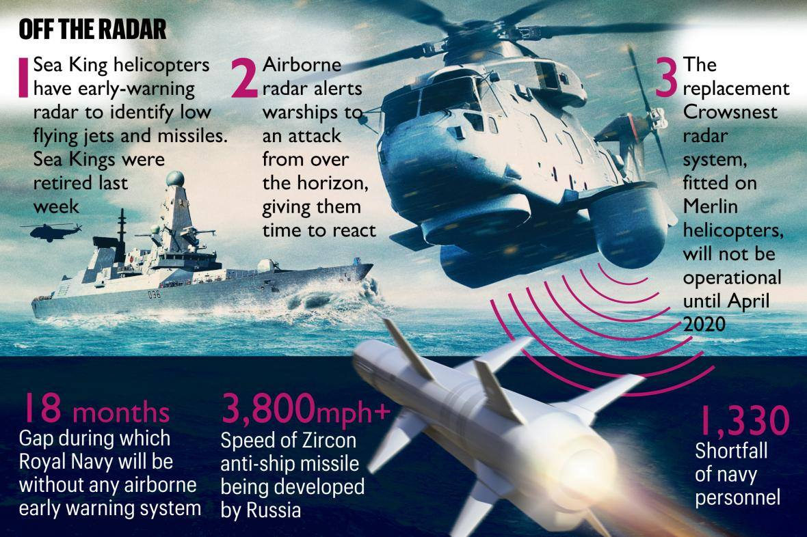 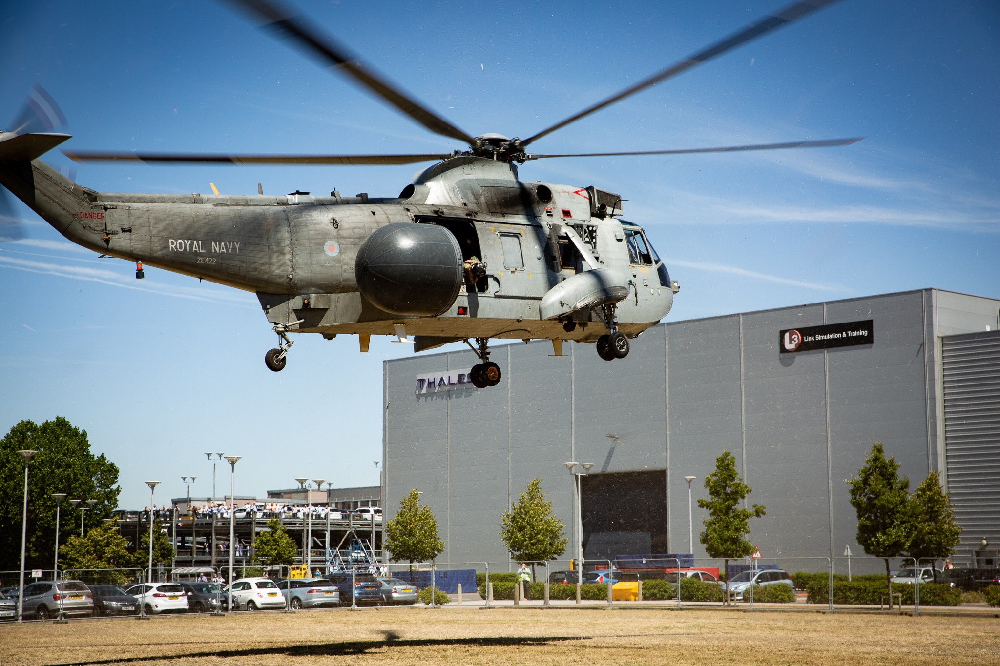
<미해공군을 괴롭힌 북베트남군> 1965년 4월, F-100 Super Sabre 21대의 호위를 받는 46대의 F-105 Thunderchief 전폭기들이 '용의 아가리'로 별명이 붙은 탄 호아 다리를 폭격하러 출격. 이들을 기다리고 있던 것은 8대의 낡은 MiG-17. 북베트남군의 MiG-17기들은 처음부터 수퍼세이버들은 외면하고 오로지 폭탄이 주렁주렁 매달린 육중한 썬더치프만 노림. 호위 전투기 숫자로만 따져도 21대 8의 대결이었는데 결과는 놀랍게도 3대의 썬더치프가 격추되는 동안 MiG-17은 1대가 격추된 것으로 추정만 될 뿐 확실한 kill은 한대도 없었음. 한국전 시절의 낡은 아음속 미그기에게 마하 2.1을 내는 최신예 미공군기가 격추되었다는 소식에 미공군 참모총장 John P. McConnell은 화가 나서 펄펄 뛰었다고. 그러나 가장 큰 문제는 이후 반복된 공습과 많은 미군기들의 손실에도 불구하고 결국 탄 호아 다리를 못 끊었다는 것. 어떤 전쟁이든 보급로 파괴를 하지 못하면 전쟁은 끝나지 않음. 결국 이 다리를 끊은 것은 미공군의 팬텀기들이 사용한 레이저 유도 폭탄(LGB). 1972년 첫 폭격에서 간단히 다리를 파괴했고, 맺힌 원한이 많았던 미군이 2차 3차로 반복 공격하여 완전히 다리를 파괴. * 첫사진 F-105 Thunderchief. 폭장량이 B-17보다 컸음. * 두번째 사진 LGB를 얻어맞은 탄 호아 다리
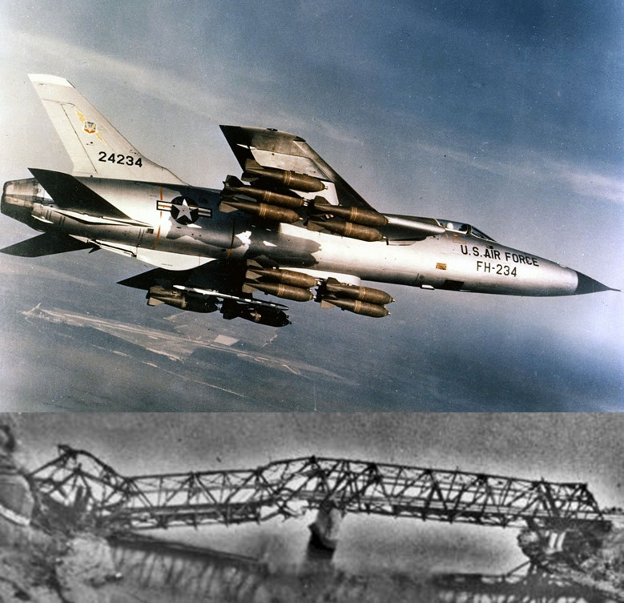
<활주하는 미쓸> 이건 1988년 경에 일어난 일인데, 사실 이때 뿐만 아니라 arrest wire로 거칠게 착함하는 항모에서는 종종 일어나는 사고. 이 사고 때도 그렇지만 대개의 사고는 미사일을 파일런에 고정시키는 핀이 부식되어 착함의 충격에 부러져 AIM-9 미사일이 관성으로 떨어져 나가는 것. 물론 뇌관이 비활성 상태이므로 폭발 위험성은 없지만 사진에서 보듯이 모든 갑판원들이 정줄 놓고 도망치는 것이 정상. 한 늙은 수병이 저 현장에 자기가 있었는데 저때 도망치지 않은 유일한 사람이 저걸 찍던 사진병(Photographers Mate)이었다고 함. 저 사고 이후 3달간 저 type (LAU-7, 아래 두번째 사진)의 전체 미사일 고정대를 점검하느라 고생했다고.
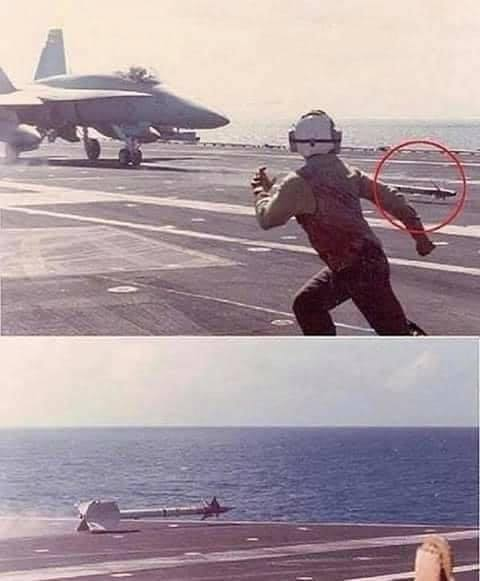 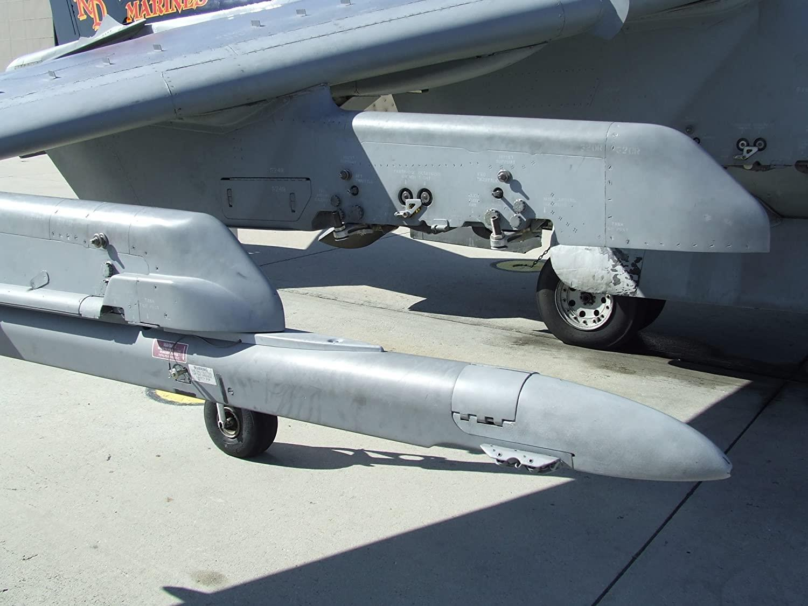
<왜 함재기 버전의 머스탱은 없는가?> 둘리틀 중령의 기습 폭격 이후 일본 본토에 대한 첫 폭격이 이루어진 것은 1944년 6월. 물론 B-29라는 초장거리 폭격기 덕분이었고 출발지는 무려 쓰촨성 쳉두 (삼국지에서 유비가 자리잡은 촉나라 성도). 그러나 2가지 문제가 있어서 활발한 공습이 이루어지지 못했는데 (1) 쓰촨성까지 연료와 폭탄 등 보급이 만만치 않고 (2) 그렇게 먼거리까지 함께 따라갈 전투기가 없음. (1)번 문제는 1944년 10월, 마리아나 제도(괌)를 점령하고 거기에 비행장을 건설하면서 해결. 그러나 (2)번 문제는 여전히 숙제. 그래서 시작한 것이 B-17을 영국에서 베를린까지 따라다니며 호위해줄 정도의 초장거리 전투기인 P-51 Mustang의 함재기 버전을 만들자는 프로젝트. 그런데 머스탱은 영국 공군 Supermarine Spitfire와 똑같은 Merlin 엔진을 사용한 전투기로서, 그 초장거리 특성은 엔진이 아니라 laminar flow라는 날개 특성을 이용한 것. 장거리 비행 능력의 반대급부는 아무래도 선회력이 좀 떨어지고 특히 실속 속도(stall speed)가 매우 높았다는 것. 즉, 항모에 착함하려면 90 mph 이하로 내려앉아야 하는데 82 mph 이하로 감속하면 추락함. 이건 매우 능숙한 파일럿이나 해낼 수 있는 임무. 그럼에도 불구하고 1944년 10월부터 25회나 테스트를 실시하여 '해낼 수 있다' 라는 결론을 내렸는데 그 사이에 미군이 이오지마와 오키나와를 점령. 거기서는 머스탱도 도쿄까지 왕복이 가능. 함재기 버전이 필요가 없어짐.
"어, 이러면 이거 완전 나가린데."
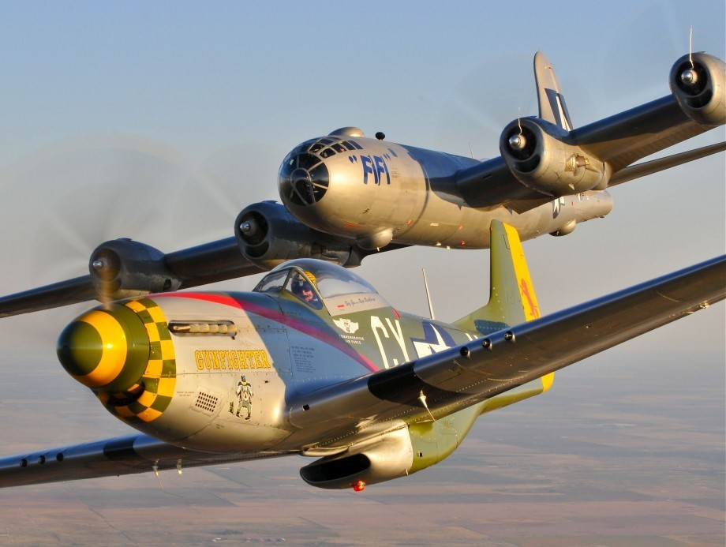
<왜 나무조각들이 튀어오르지?> 1943년 3월, 뉴기니로 육군병력을 실어나르는 일본군 선단을 미리 파악하고 있던 미-호 연합군이 180대의 전투기와 폭격기로 습격한 사건이 Bismarck Sea 전투. 일본군도 8척의 구축함과 100여대의 항공기로 이 선단을 호위했으나 역부족. 8척의 수송선이 모조리, 그리고 호위하던 구축함 4척도 꼬로록. 2번째 사진은 영국제 Bristol Beaufighter. 경폭격기처럼 보이지만 실은 heavy fighter. 20mm 4문과 30구경 6문을 갖춘 도살자. 적함선을 공격할 때는 (어뢰도 없으면서) 마치 뇌격을 하려는 것처럼 낮게 접근했는데, 그러면 적함선은 어뢰를 피하려고 선수를 돌려 날아오는 보파이터 쪽으로 향하곤 했음. 그로 인해 보파이터가 기총소사를 하면 피해가 극대화됨. 이 전투에서 호주군 보파이터가 일본군 병력수송선에 그런 식으로 기총소사를 퍼붓는 것을 근거리에서 본 B-25의 미군 조종사의 증언 : "기총소사로 수송선을 긁어대니 나무조각 같은 것들이 막 튀어오르더라고요. 저는 왜 저런 것들이 튀어오르지? 하고 의아했는데 자세히 보니 그게 다 일본군 병사들이었어요. 생지옥이더라구요." ** 일본군 약 2900명 사망, 미-호 연합군 13명 사망
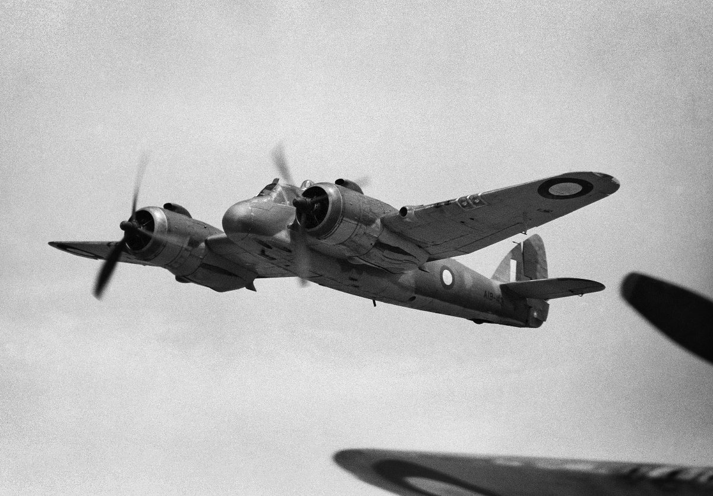 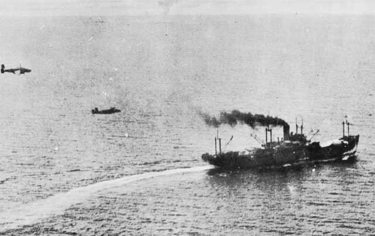
<미천한 시작 위대한 말년>
USS Long Island (CVE-1, 1만3천톤, 16노트). 1940년에 낡은 화물선을 개조하여 만든 최초의 호위 항모. 디젤 엔진 딱 1기, 물론 스크루축도 딱 1개.
심지어 말년을 더욱 뜻깊게 보냈는데 로테르담에서 학생들을 위한 호스텔로 11년 간 사용되다 장렬히 고철로 최후를 맞음.
** 알고보니 경항모로 주택문제 해결할 수 있다는 거 진짜였음. (아님)
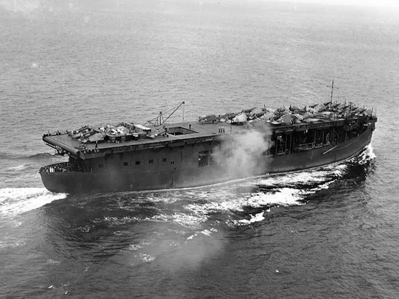
** 요즘 회사 일 등이 좀 바빠서 제대로 된 포스팅은 못 올리고 지난 몇 주간 제 페이스북에서 우스개로 짧게 올렸던 토막 이야기들을 copy & paste 했습니다. 양해 부탁드려요~.